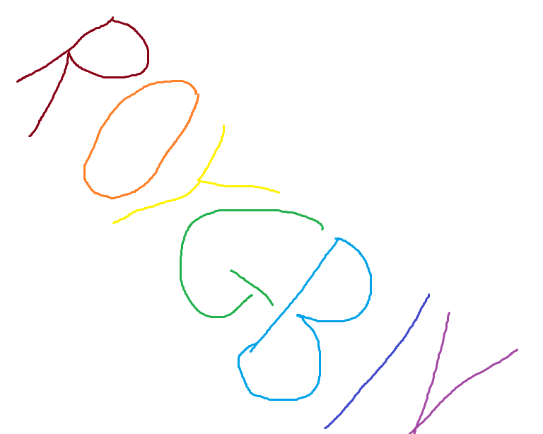

There are more colors in our world than we could ever imagine. Every color that we see comes from the three color recepter cones inside the retina. While we have three receptors there are several other animals that have more. Some of the animals can see better in the dark, see infared heat signatures, or even just more colors. The colors that they can see are of a specteum that is invisable to the human eye. There are millions of colors that the animals can see while to us seem plain white of black. The color remain hiden in a color that is inbetween the lightest violet and white, and bewtween the darkest blue or maroon and black. For more information about these animals click here
While cirtain animals cannot see as many colors as the average person because of their lack of cirtain cones some people cannot see all of the colors. While most people can see all the colors due to our 3 cones in our eyes there are people who cannot. 8% of the human population is color blind. This does not mean that they can not see any color whatsoever but they can only see a very select few. For more information about colorblindness click here